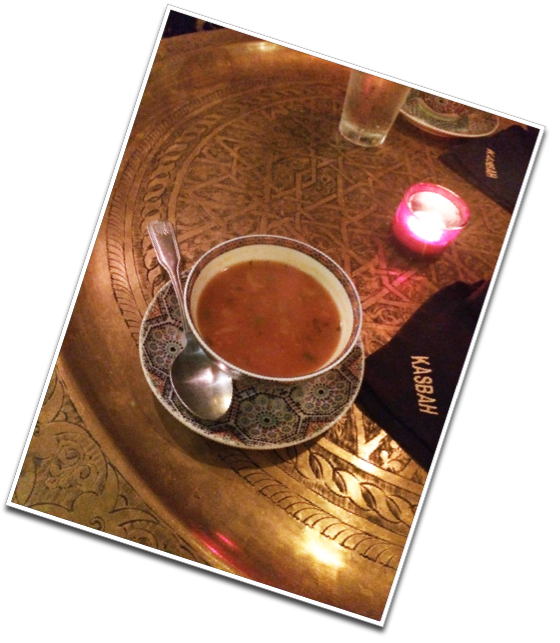

harira

Description
Harira is a classic Moroccan lentil and chickpea soup with fresh herbs and loads of warm spices. This satisfying vegetarian soup is even better the next day, so it is the perfect make-ahead pot to feed a little crowd.
Ingredients
Here is a list of ingredients used to prepare a Tajin :
- Ground turmeric
- Ground cumin
- Ground ginger
- Ground cinnamon
- Ground black pepper
- Pinch of Cayenne
Steps
- Cook onions, celery, and carrots
- Add the tomatoes, lentils, chickpeas
- Add the liquid and cook